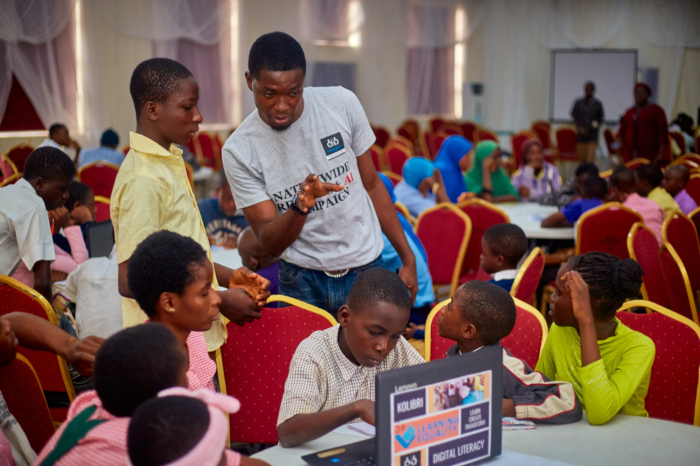
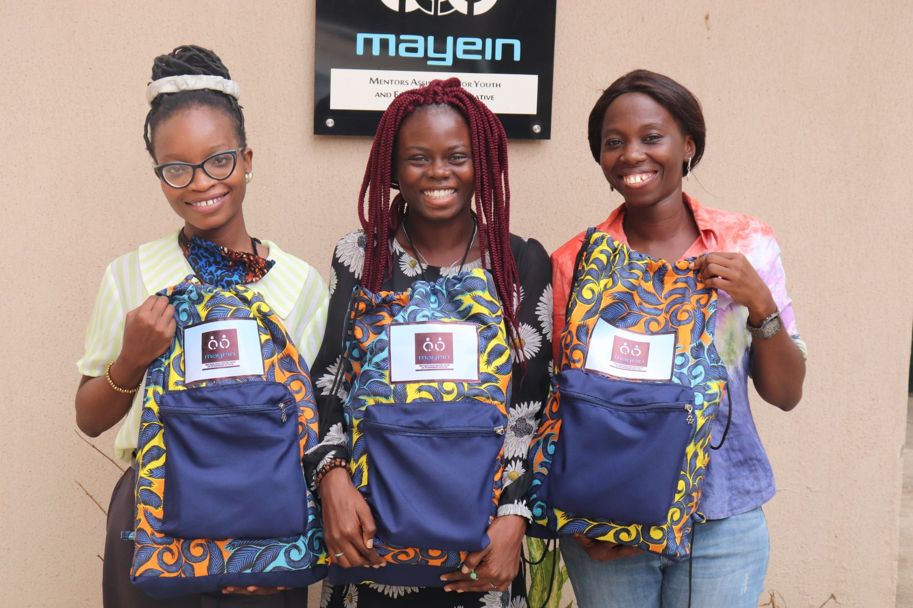
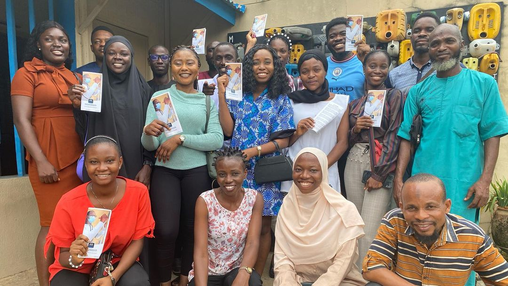

Mentoring Assistance for Youths and Entrepreneurs Initiative (MAYEIN)
MAYEIN is a nonprofit organization headquartered in Ibadan, Nigeria which focuses on Positive Youth Development through the strategic advancement of SDGs 4, 5, 16, and 17. Established formally in May 2012, with registration No: CAC/IT/NO 52811, MAYEIN has impacted over 23,000 marginalized teenagers, girls, and youth across Nigeria through a compendium of programs, campaigns, knowledge products as well as direct services.
Our main approaches to impact include research and learning, youth and girl-centered tool kits, flexible learning spaces, and community/stakeholder-based partnerships. Our organization has also recorded major internal grant partners – including the Rockefeller Philanthropy, USA (2022) and in 2021, MAYEIN was conferred special consultative status at the United Nations (UN) Economic and Social Council.

Our Mission
To lead strategies that promote inclusive quality education and lifelong learning for all, gender equity, and civic readiness for the attainment of positive youth development.
Our Vision
We envision a country and continent where young people are thriving in communities and correspondingly communities are thriving because of young people

-
Education
MAYEIN champions inclusive education, and is committed to flagging education centered initiatives targeted at impacting underserved children and early youths through community-based access to literacy resources and in school projects.
-
Entrepreneurship
MAYEIN fosters a culture of entrepreneurship by equipping individuals with the skills and resources necessary to launch and grow successful businesses
-
Gender Equity
MAYEIN is dedicated to empowering women and girls with the necessary tools and knowledge to reach their full potential and advocate for policies that dismantle barriers to girls’ education.
-
Civic Engagement
MAYEIN equips young people with the knowledge and skills to become active citizens towards a better society. By empowering young voices, we are building a more engaged and just society for all.
What We Do
We have been able to identify clear methods and approaches that are highly effective when working with young people. As such our various impact solutions are typically designed to be delivered using any of the formats/approaches below
- Education
- Entrepreneurship
- Gender Equity
- Civic Engagement
Support Us
Together, we can create a brighter future for our community. Your support through donations, volunteering, or participating in our programs helps us continue our work in education, entrepreneurship, gender equity, and civic engagement.
Impacted
What Our Community Says
I chose MAYEIN because the organization’s goals align with my interests. I can recall vividly the difficulties my siblings and I had in getting access to good education. Education, even till the tertiary level was something I had to struggle through. And so, I resonate with MAYEIN’s effort in trying to prevent other children from going through similar challenges.
I am the first child in my family and the first to be computer literate through the MAYEIN Oyo E-Literacy project at the MAYEIN Youth Centre in my community. Afterward, I introduced my immediate younger brother to the training. The program was educative and fun because I had a laptop to myself during the training. I was excited to have also co-facilitated the Cohort 6 training during the long vacation with MAYEIN facilitators. I learned new things that I didn’t give attention to during my cohort training and taught others what I had learned already. It was fun to be an ICT trainer. I would like MAYEIN to continue this programme so that other children in my community can benefit.
Before MAYEIN came to our school, I knew nothing about the computer. But now, I have a better knowledge of it. I can now work with Word processor which allows me to type documents, print, use tables and smart art. I will like to say a very big thank you to the MAYEIN team for their digital literacy learning programme. MAYEIN has impacted me and many of my friends through this project and we are indeed grateful.
First of all, I want to appreciate God for the way this training started and ended. Qualitative but free of charge. In fact, if one would get such training like this, I never expected it would be in Nigeria. And to our facilitators, they took us for who we are i.e. teachers who still find it difficult to learn something simple quickly. They took time and patience to explain things to us on the screen repeatedly, yet some of us still asked the same questions over and over again. It was a wonderful moment for someone like me. Thank you so much.